CAD and drawing studies
Three exercises in modeling discipline: complex surfacing, a complete drawing package, and designing a part down to weight.
Seaplane: surface modeling
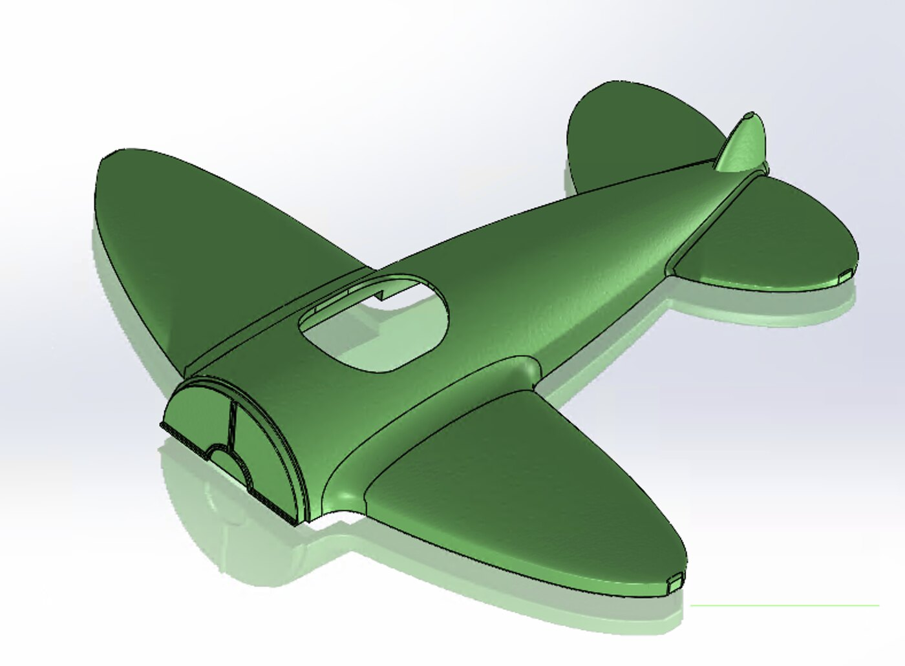
A multi-body surfacing exercise. Lofted fuselage and wing surfaces have to meet with continuity at every junction, which is a different discipline from solid modeling: the build order and the guide curves determine whether the result is a clean surface or a visible crease that no amount of filleting rescues.
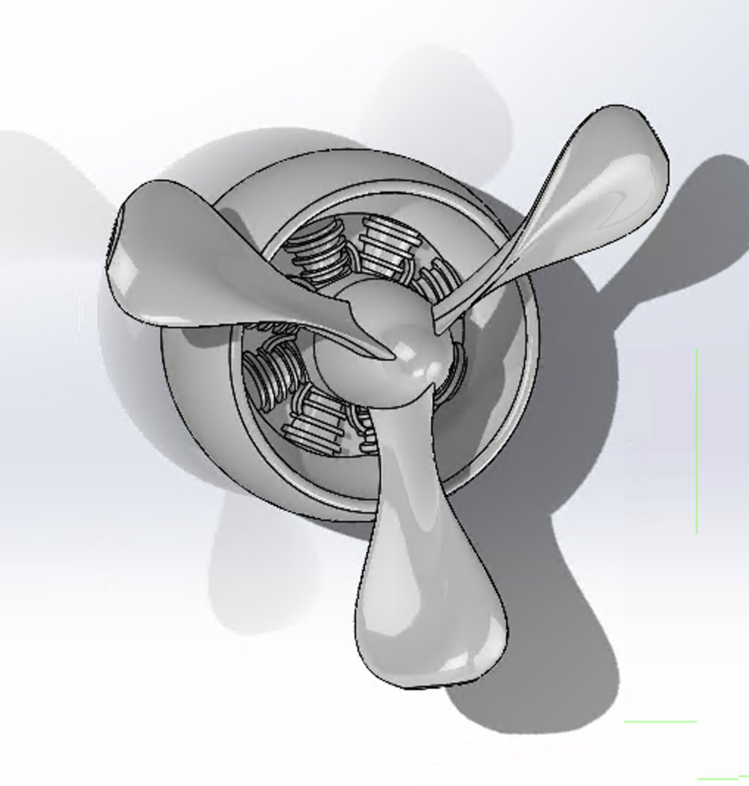
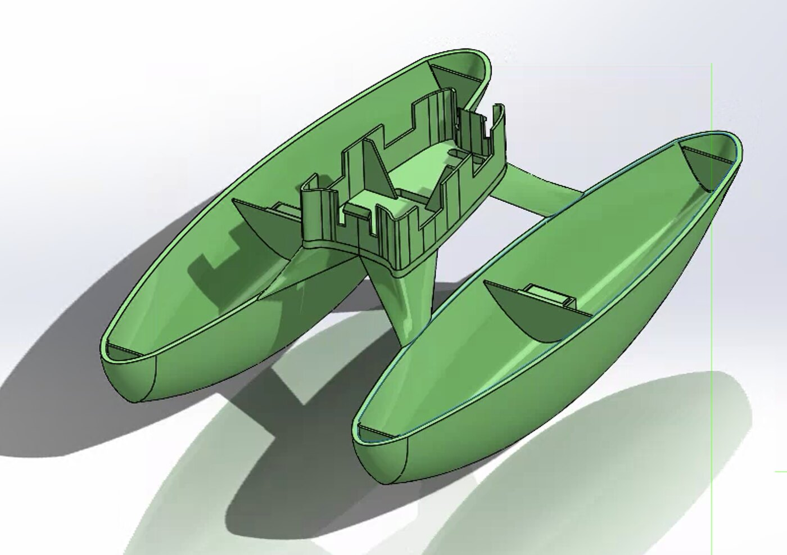
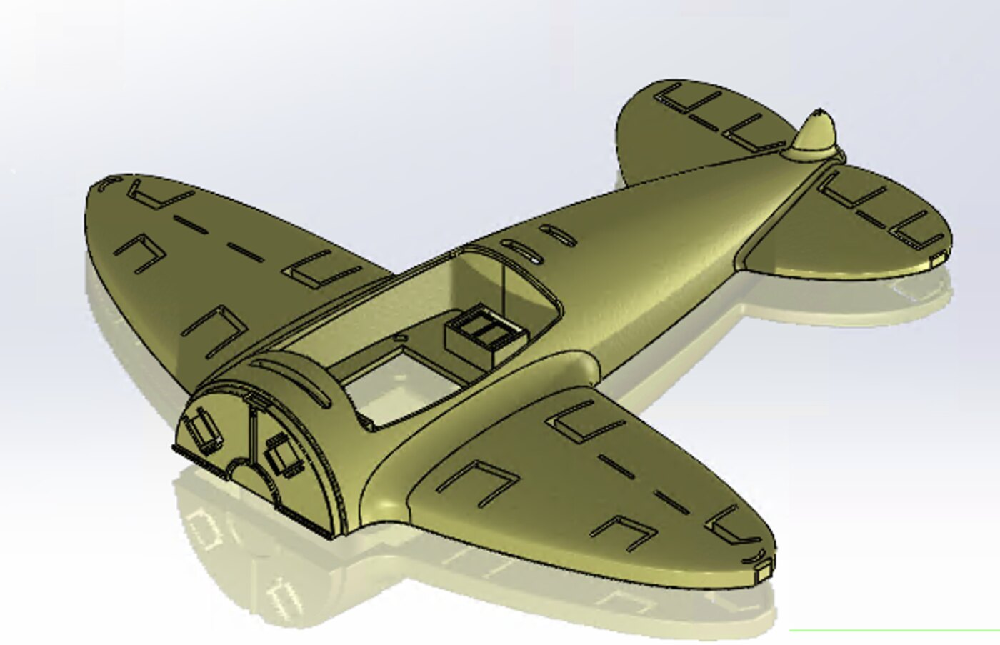
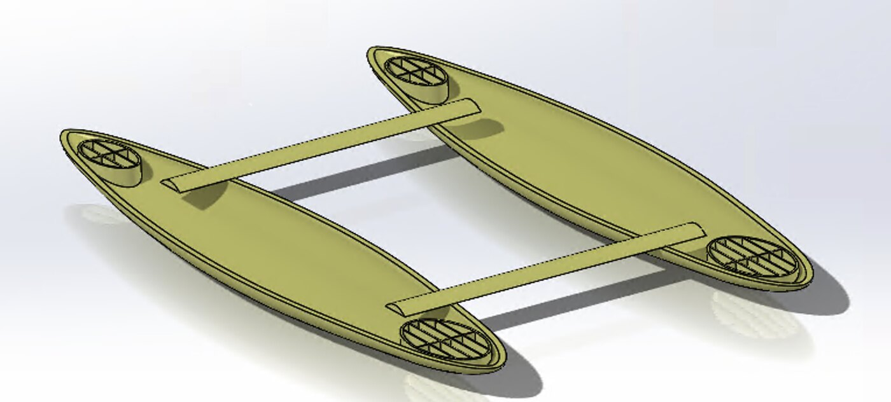
Bike-device attachment
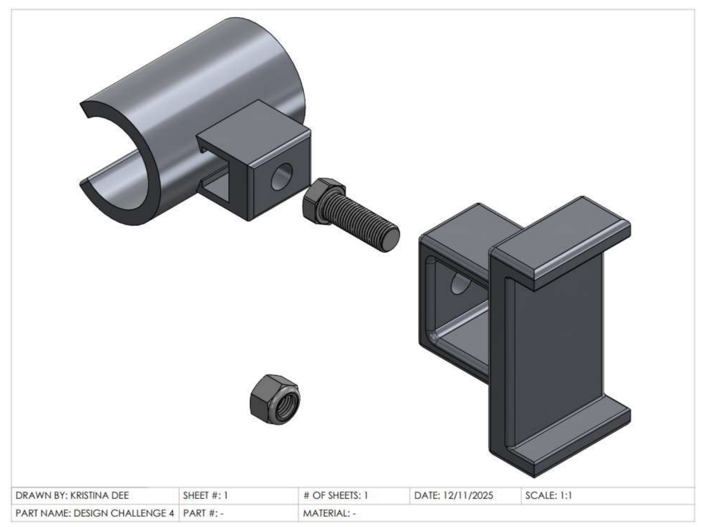
A two-part handlebar mount with a complete release package — fully dimensioned part drawings, an assembly drawing with balloon callouts, and a bill of materials that specifies the purchased fasteners by McMaster part number rather than describing them.
Both structural parts are 6061 aluminum. The clamp wraps past 180° so it captures the bar before the screw is tightened, and the screw works in tension across the split rather than relying on friction alone.
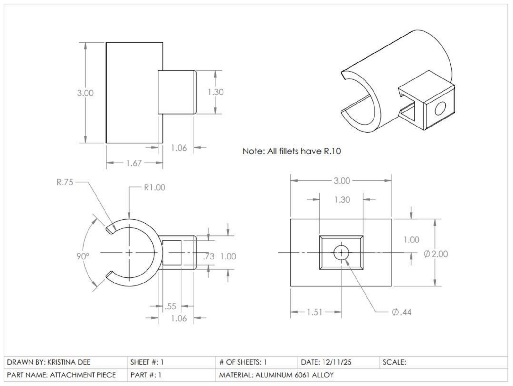
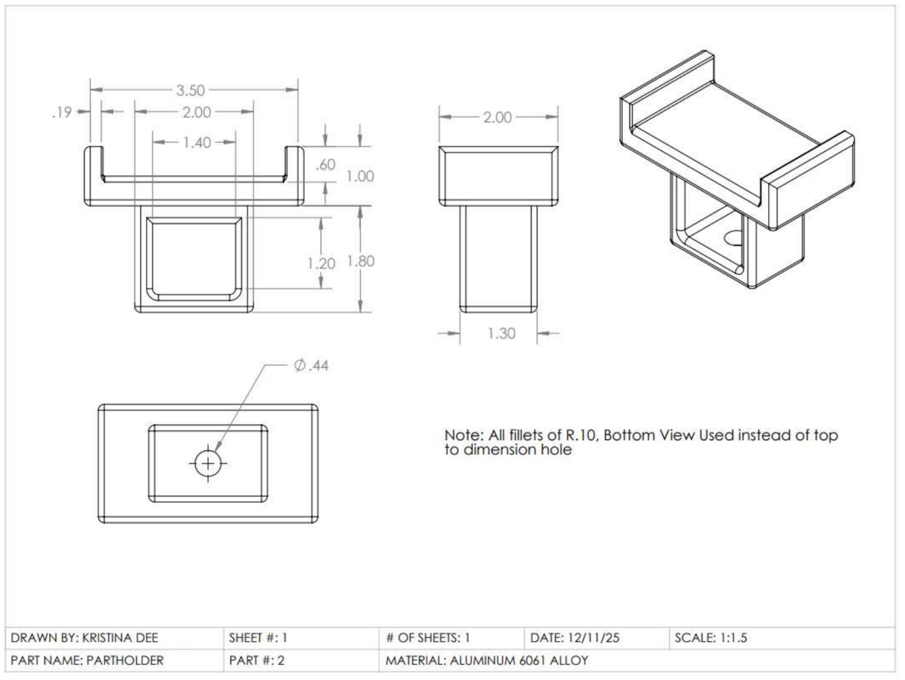
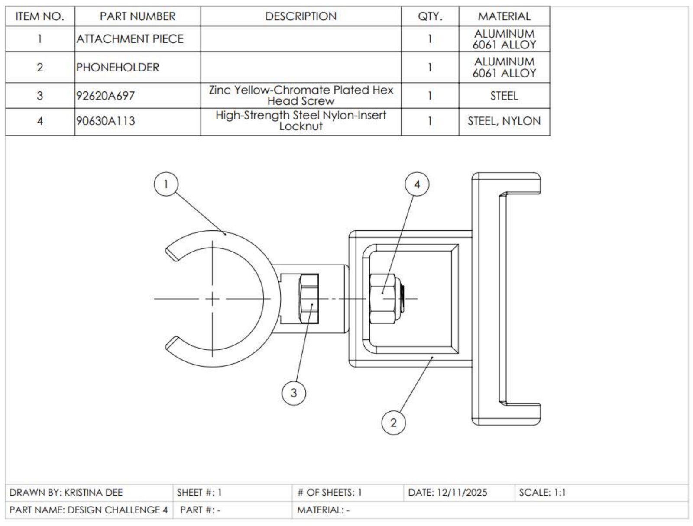
Bi-pedal robot femur
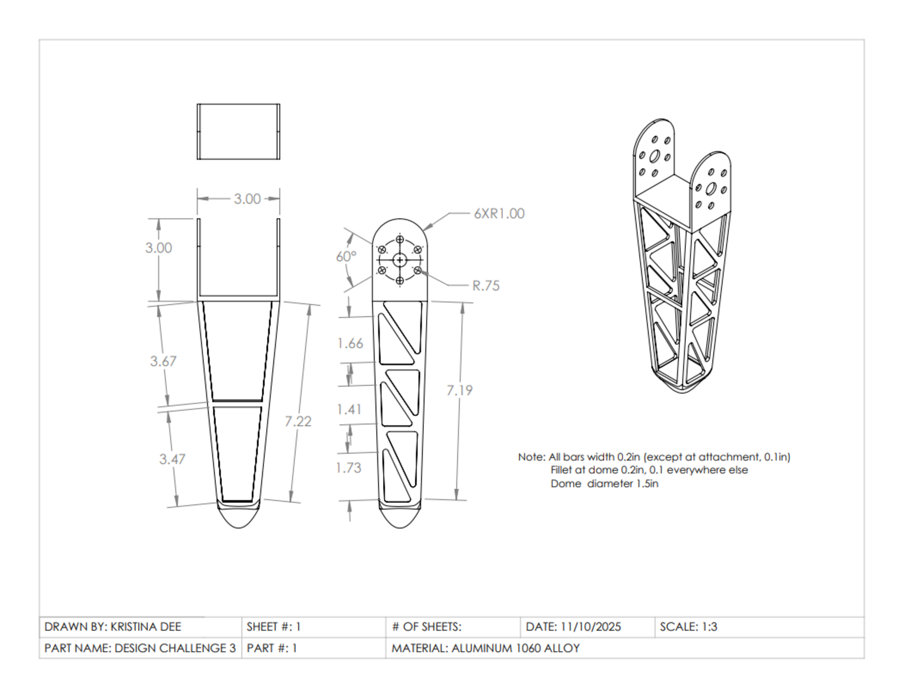
A structural link for a walking robot, where mass is the design driver — every gram in the leg is mass the actuators accelerate twice per stride. The truss cutouts target the web, which carries little in bending, while the flanges and the hip bolt circle stay solid.
Mass properties were tracked in SolidWorks as the cutouts developed, so the weight reduction is measured against the solid baseline rather than assumed.
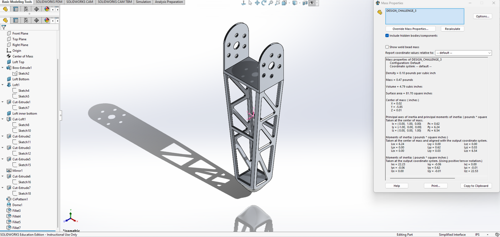
This was scoped as a modeling and drawing exercise rather than a verified structural design — the truss layout follows where bending load is lowest, but no stress analysis was run against it. Taking it further would mean defining the stride load case and solving the part under it, which would turn a reasoned cutout pattern into a justified one. The bi-pedal jumping robot is where I worked through leg architecture properly.
- Course
- Computer Graphics & Design
- Work
- Individual
- Tools
- SolidWorks
- Materials
- Al 6061, Al 1060